Tone
Bass, mid, and treble shaping with mode-aware shelf and peak placement. Mid sits at 2 kHz in Vocal mode for speech intelligibility, 1 kHz in General mode for warmth.
Realtime-safe audio tools for decisive cleanup and finish work
VX Studio brings cleanup, control, finishing, and analysis into one deliberately compact suite for spoken-word and mix repair work. Strong results, minimal UI, and no audio-thread surprises.
Each product stays narrow on purpose, so the suite feels consistent instead of crowded.
The Platform
16 specialized tools for modern voice and mix processing
Bass, mid, and treble shaping with mode-aware placement. Fast tonal balance after corrective cleanup.
Targeted de-esser, plosive control, and breath removal. Three independent bands for precise speech-artifact cleanup.
Broadband denoise with stronger real cleanup at high settings and less hidden give-back.
Room-tail reduction with improved early/late discrimination so strong settings act on real tail evidence.
Shared finishing engine for polish, cohesion, and safer true-peak-aware recovery lift.
LA-2A-style opto levelling with a Pro mode for manual Behavior and Stereo Link control. Slower and smoother than Finish.
Source-aware close-mic modeling with smoother adaptive retuning and steadier loudness across different inputs.
Learned-profile subtraction with smarter trust for stale or mismatched captures.
True vocal rider and mix leveler with sidechain music tracking and a visible ride-gain trace.
ML-backed denoise with stronger runtime orchestration and artifact-aware Guard behavior.
Confidence-driven source-family rebalance with stronger extreme moves and cleaner ownership/render separation.
Track-local chain analysis that follows only the active upstream path feeding the plugin instance you are inspecting.
Two-control proximity simulator. Closer adds low-end body; Air adds upper-presence shimmer. Simpler than the full three-dial model.
Automatic mud, harshness, and roughness correction. Targeted subtractive refinement without manual EQ.
All-in-one guided repair. Analyses the audio and automatically applies noise reduction, click repair, speech clarity, and dereverberation.
Confidence-gated vocal pitch correction. Fixes pitch errors while leaving vibrato, bends, and phrasing untouched, with a live sung-vs-tuned trace.
Quick Reference
Quick reference notes for the full suite
Bass, mid, and treble shaping with mode-aware shelf and peak placement. Mid sits at 2 kHz in Vocal mode for speech intelligibility, 1 kHz in General mode for warmth.
Three independent bands - de-esser, plosive control, and breath reduction - for targeted speech-artifact cleanup without touching the rest of the signal.
Broadband denoise for hiss, fan noise, and steady background beds. Runs a classic spectral noise floor estimate rather than a neural model, so CPU use stays low enough for dozens of tracks at once. GR meter shows active noise reduction in real time; use it to confirm the reduction amount before trusting a strong setting by ear alone.
Room-tail reduction tuned to act on late ambience more intentionally instead of flattening the whole source. GR meter active.
Final-stage polish combining a Recovery lift stage with true-peak-aware limiting, so it can add perceived loudness back after corrective processing without letting inter-sample peaks clip downstream. Meant to be the last plugin in the chain, after tone and dynamics are settled.
LA-2A-style opto levelling with programme-dependent gain reduction. Pro mode unlocks Behavior (Compress or Limit) and Stereo Link for engineer-facing control.
Source-aware close-mic modeling for intimacy, body, and air, with vocal-focus adaptive pattern factor.
Two-control proximity - Closer and Air - for sources that need warmth without the full Mud compensation dial.
Learn a repeatable noise profile, then subtract it. Now warns when a profile is older than 20 minutes and the noise floor may have drifted.
Adaptive levelling with two behaviours on one control set: a true vocal rider that freezes its fader in pauses and can hold a vocal a set amount above sidechained music, and a mix leveler with realtime, smart, and timeline-locked offline analysis. Target and Depth trim where the ride sits and how far it reaches; the level trace shows the fader and its target as it works.
ML-backed denoise for heavier or more complex interference than a spectral denoiser can track cleanly - traffic, chatter, non-stationary beds. The Guard control blends the model's output back toward the dry signal when the network starts producing artifacts, trading some noise removal for a more natural result on hard material.
Separates a stereo mix into Vocals, Drums, Bass, Guitar, and Other on the fly and lets you push each family up or down, no stems required. A confidence signal scales how hard each move is allowed to push, so an uncertain separation eases off automatically instead of smearing the mix.
Automatic mud, harshness, and roughness correction using detection-driven biquad processing. Targeted subtractive refinement without manual EQ.
All-in-one guided repair built on the same embedded DSP as Denoiser, Deverb, and Speech Clarity. Analyses the audio and suggests settings per stage - Noise, Click, Clarity, Reverb - rather than one global amount, and a scale control on each stage lets you dial an individual suggestion back without redoing the analysis.
Chain-wide spectrum and gain-reduction view that follows only the active upstream path feeding the instance you are inspecting, so it stays correct even when other tracks route through the same plugin chain. Drop it anywhere in the signal path to compare input against output at that exact point, not just at the very end of the chain.
Confidence-gated vocal pitch correction: instead of snapping every note to the nearest scale degree, it checks whether a deviation looks like an error or an intentional bend/vibrato before acting, so expressive performance detail survives correction. The live sung-vs-tuned trace lets you see exactly what it changed, note by note, rather than trusting the setting by ear.
How to Chain It
Remove problems before adding character. The order below keeps each stage working on clean material.
Start with DeepFilterNet (complex noise), Denoiser (steady hiss/HVAC), or Subtract (learnable profile). Remove the floor first so later stages do not react to it.
Apply Deverb before proximity or tone so you are not lifting reverberant smear into your shaping moves.
Use Speech Clarity for sibilance, plosives, breath, and click control. Corrective work before any additive processing.
Run Tune before proximity and tonal shaping so those stages work on the final pitched signal, not the raw take.
Add closeness with Proximity, then shape with Tone or ToneRefine. These work best on already-cleaned material.
Apply Finish, OptoComp, or Leveler last. Compress and limit after tone is settled to avoid pumping artifacts from upstream noise.
Place Studio Analyser at the end to compare chain input vs. output, or click any stage in the left rail to inspect just that processor's dry-vs-wet spectrum.
DeepFilterNet — heavy, non-stationary, or complex noise (traffic, cafes).
Denoiser — steady broadband noise (hiss, fans, HVAC).
Subtract — repeatable learnable bed (hum, projector, AC).
Repair — want the analysis done for you automatically.
Street noise + reflective room:
DeepFilterNet → Deverb → Speech Clarity → Finish
HVAC + thin distant voice:
Subtract → Deverb → Speech Clarity → Proximity → Tone → Finish
Already clean, needs polish:
ToneRefine → Tone → OptoComp
Visual Tour
Current product screens and representative states from the suite.

Bass, mid, and treble shaping in the vocal profile.
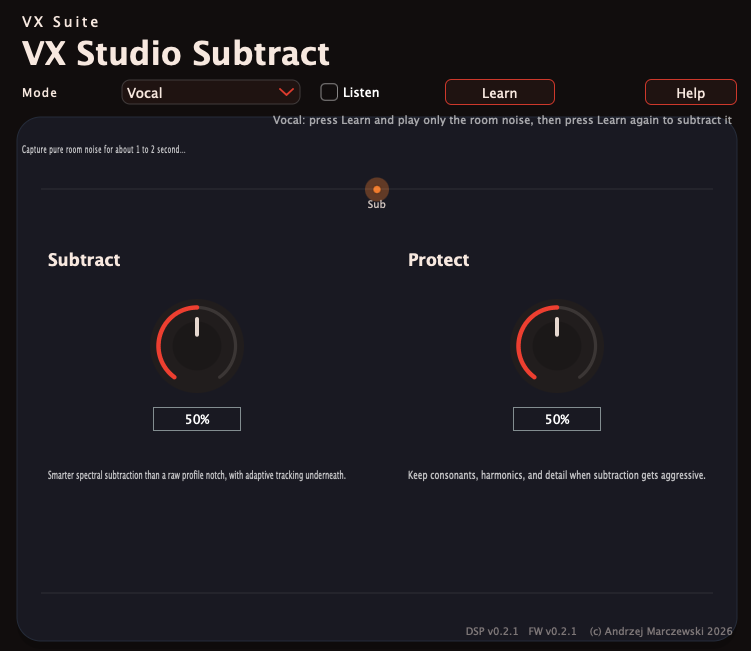
Noise profile capture with subtract and protect controls.
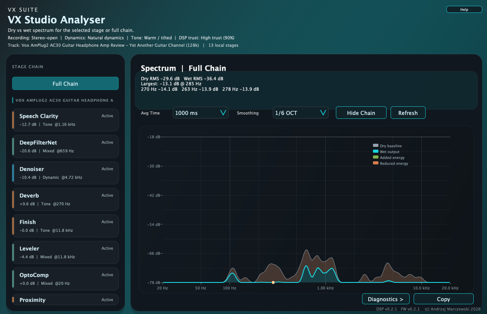
Chain-aware spectrum view for the active signal path.
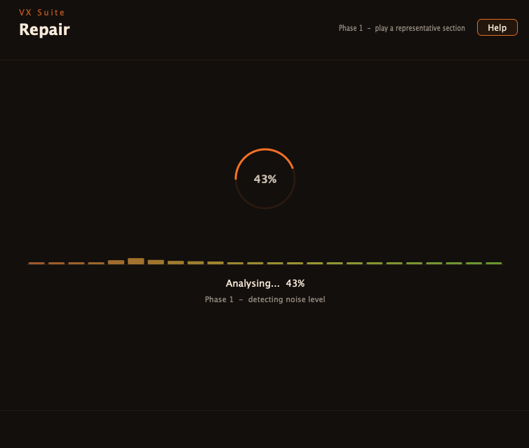
Guided analysis begins with a live progress pass.

Detected issues are split into noise, clarity, reverb, and clicks.
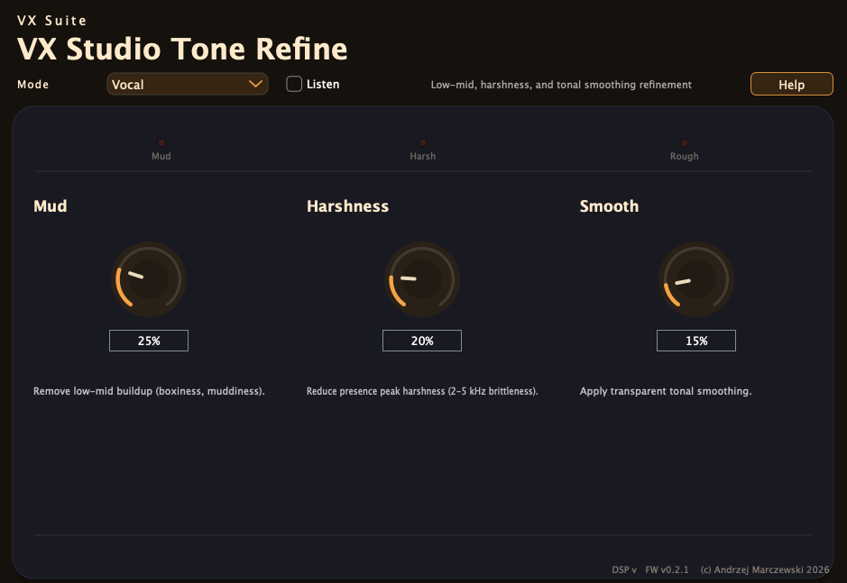
Mud, harshness, and smooth controls for tonal cleanup.
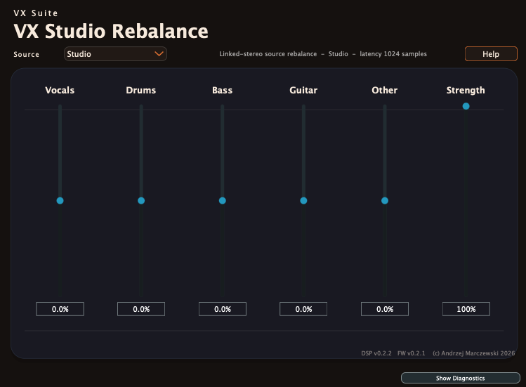
Source-family sliders for vocals, drums, bass, guitar, and other.
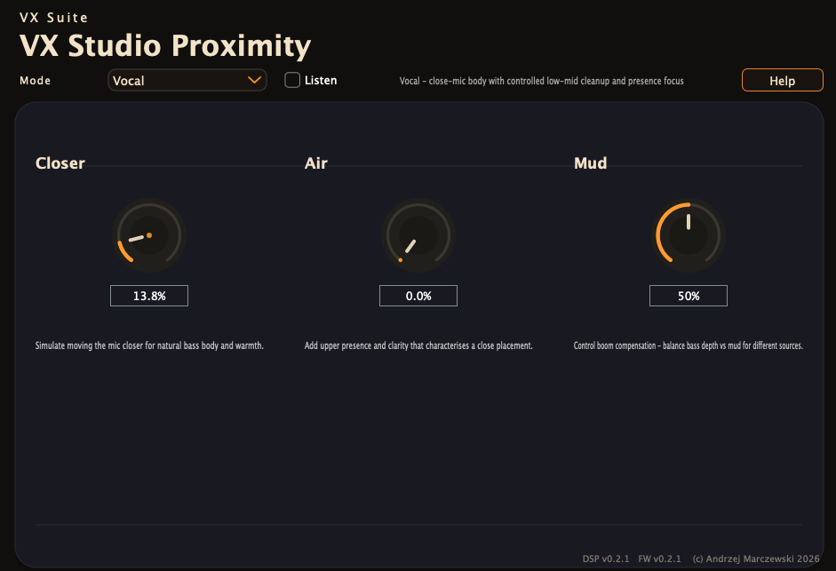
Closer, air, and mud controls for close-mic character.
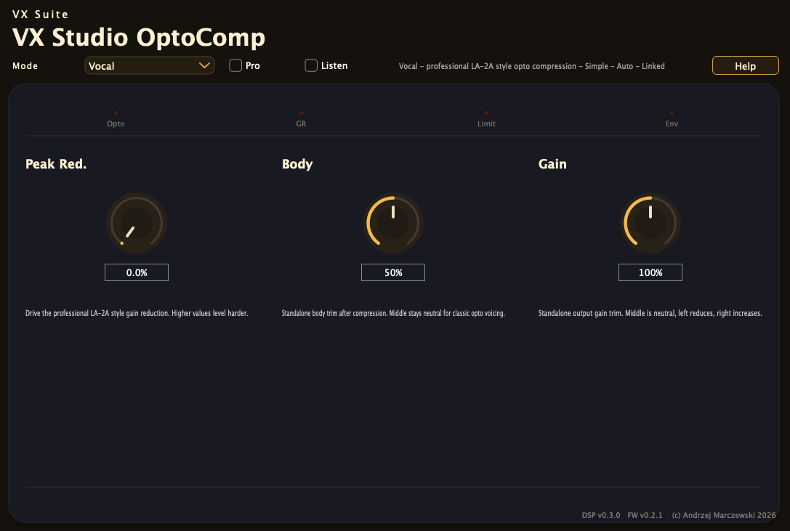
LA-2A-inspired levelling with body and gain controls.
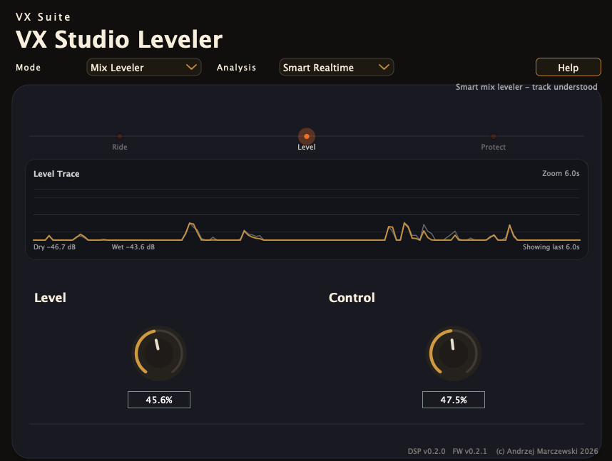
Vocal riding and mix levelling with sidechain tracking and a live ride trace.
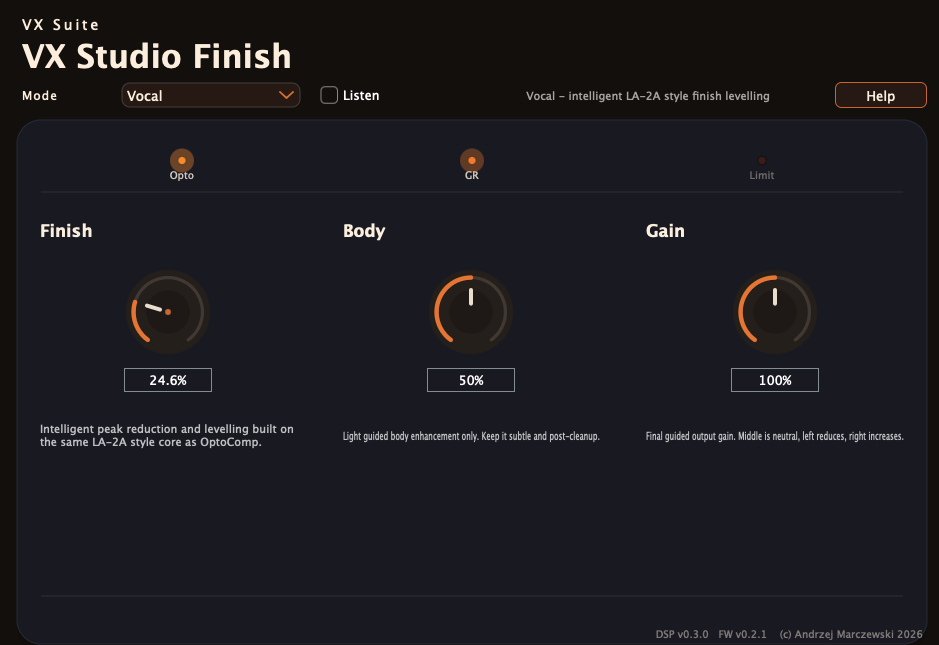
Final levelling pass for polished, safer output gain.
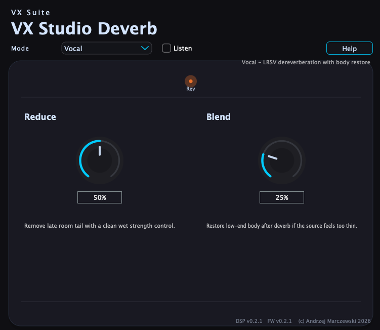
Reverb tail reduction with a body-restoration blend.
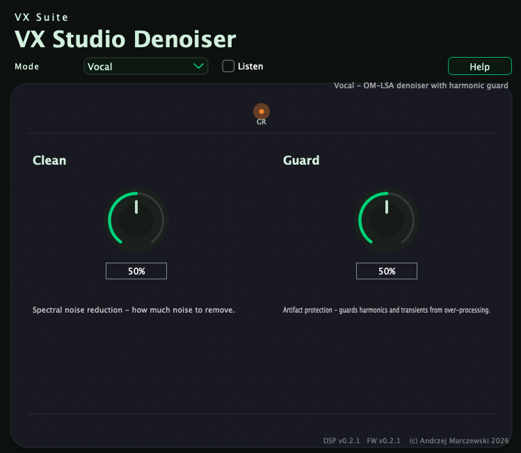
Spectral reduction and protection controls for cleanup.
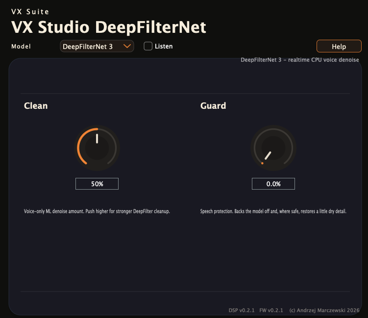
ML-backed denoise with clean and guard balancing.
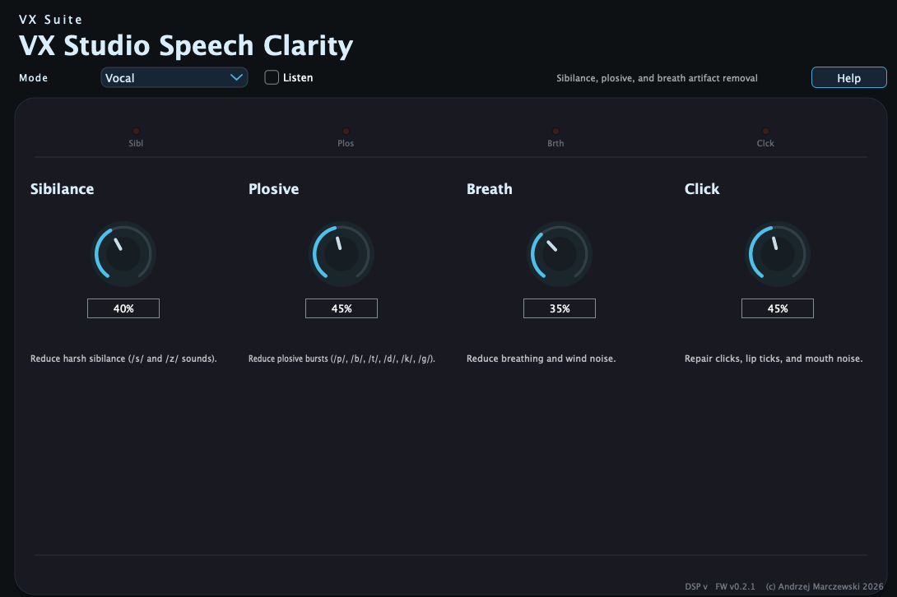
Desktop layout for sibilance, plosive, breath, and click control.

Smaller variant with the same four artifact-removal controls.
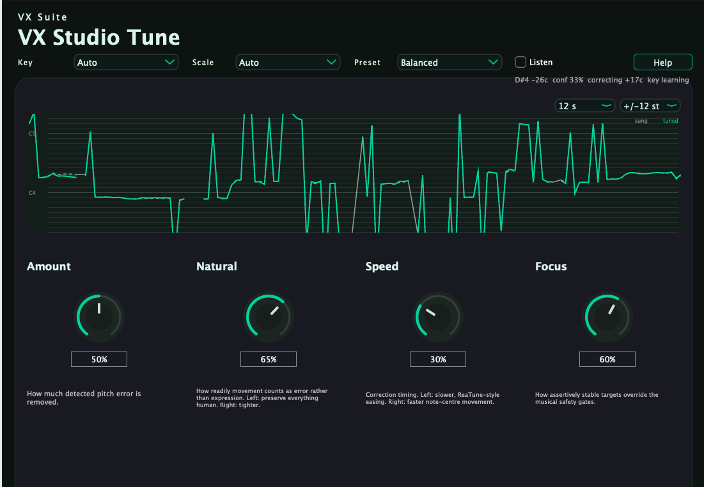
Confidence-gated pitch correction with a live sung-vs-tuned trace.
Why It Feels Solid
Production-grade features in every plugin
Zero allocations on the audio thread. Rock-solid stability for live use.
Shared selector behavior and product-specific modes keep simple UIs while letting the DSP adapt intentionally.
Removal tools audition what they remove, while additive tools audition what they add.
Built-in output safety trimmer prevents clipping and distortion.
Shared voice and signal-quality analysis help the suite react to directness, speech presence, and artifact risk.
Exponential parameter smoothing prevents clicks during automation.
Availability
The latest suite pass is complete and regression-verified
Available now
Status: Available now
macOS 11+ | Intel & Apple Silicon
VST3
Available now
Status: Available now
Windows 10+ | 64-bit
VST3 Format
Engineering
Professional audio development standards
Modern plugin standard. Full parameter automation, low-latency processing, and precise UI scaling.
Industry-standard audio framework used by iZotope, Waves, and Native Instruments.
Modern C++ for efficiency and maintainability. Zero unsafe allocations on audio thread.
Transparent development. Community-driven improvements. Inspect the source code yourself.
Guidance
Everything you need to get the most from VX Studio
Complete documentation for all plugins. Feature descriptions, tips, and best practices.
Step-by-step setup instructions for macOS and Windows. VST3 plugin discovery and troubleshooting.
FAQ, troubleshooting, and technical support. Get help with any issues.
Browse a visual tour of the current suite UI and compare the major product screens at a glance.